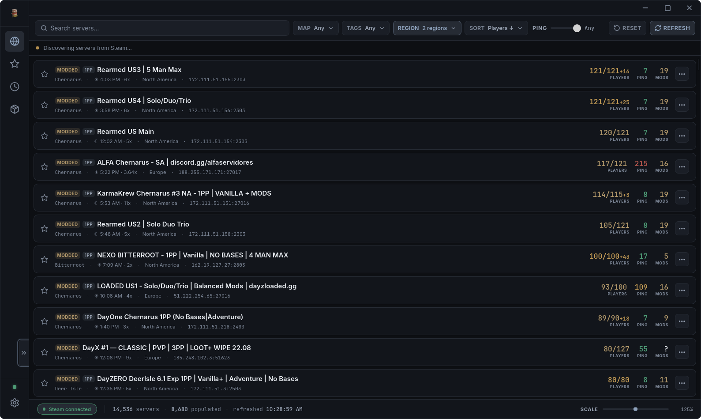
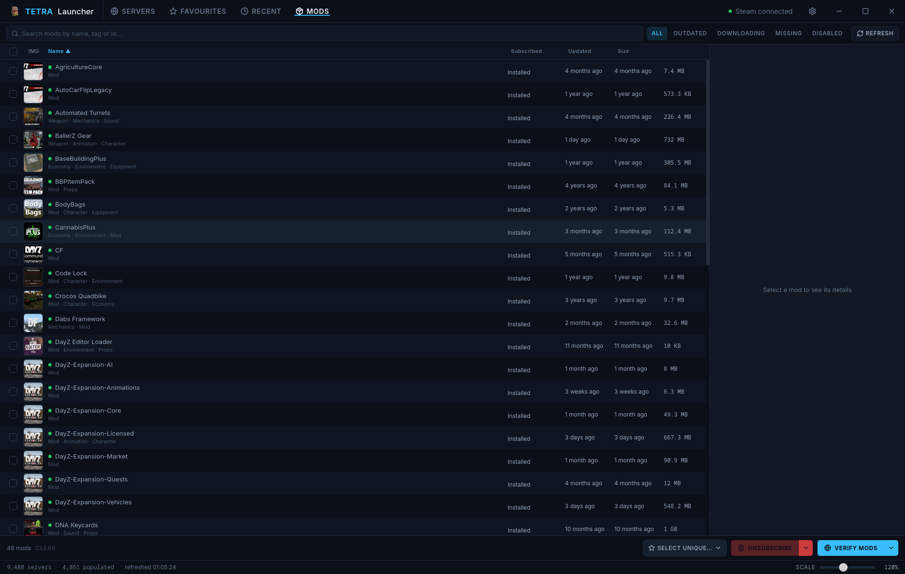

Chernarus, abandoned
A DayZ server browser that re-checks your mods against the Workshop before you connect — not Steam's cached guess. Plus a mod manager that actually knows which of your servers need what. Free, for Windows and Linux.


Server browser — filtered by tag and region, one selected for details
Field manual
Filter by map, tags, region and ping. Hide empty, full, locked or offline servers. Favourites and Recently Played, kept on your machine — your server list is nobody's business but yours.
Re-reads a server's mod list live and checks the Workshop directly before launching — not Steam's cached "needs update" bit, which can be stale by the time you click Join.
See every subscribed mod, which of your favourite servers need it, and reinstall a corrupted copy in one click — without hunting through Steam's Workshop pages.
Shows the server you're playing on in Discord, with a one-click way for friends to join you straight from your profile.
For server owners
Every server here is listed exactly as Steam reports it — no paid placement, no featured slots, no favouritism. If you want your rules, your Discord, or anything else about your community to actually reach players browsing here, set it in your server's description — an upcoming update will start showing it (and a direct Discord button) right on the server details panel.
Grid reference secured
Available for Windows and Linux. Auto-updates itself once installed.
Download Tetra Launcher